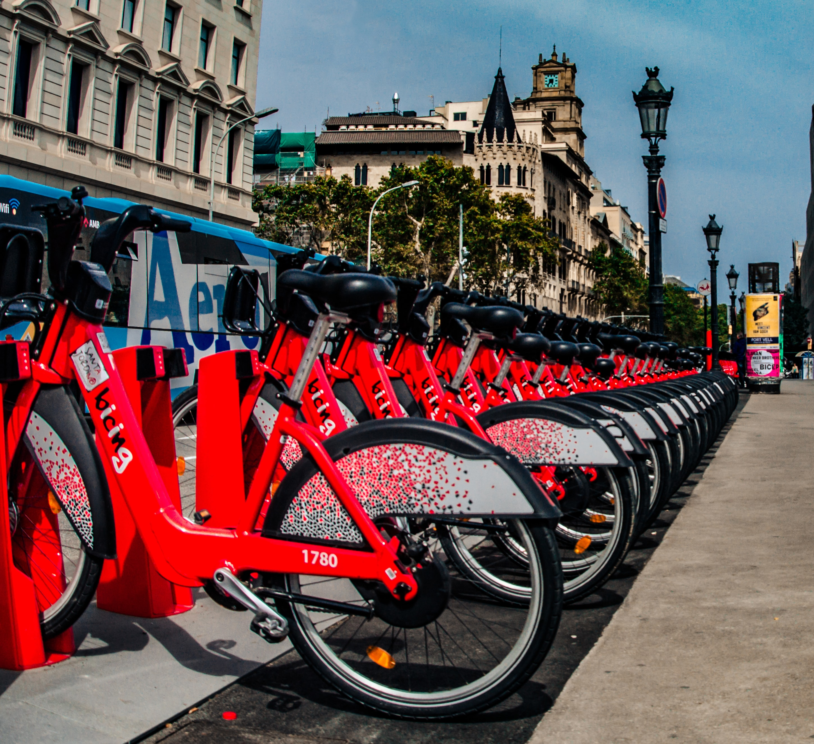

Linguagens e Banco de Dados
- Python (Análise de Dados)
- Web Scraping com Python
- SQL para extração de dados
Tecnólogo em Gestão Empresarial (12/2014).
Bacharel em Sistemas de Informação (12/2024).
Carreira na área comercial (vendas e atendimento ao cliente) - 10 anos.
Em 2019 me tornei MEI com loja física, liderando equipe e sendo responsável por todas as áreas: Gestão Financeira, Marketing, Operacional, Compras e Negociação com Fornecedores.
Em 2022 encerrei as atividades e decidi focar nos estudos, especialmente em dados, que se tornou minha paixão.
Busco oportunidades como Analista de Dados para melhorar a tomada de decisão das empresas através de soluções baseadas em dados.

Respondi as questões através de uma análise exploratória de dados em Python. Para isto, construí um dashboard interativo acessível via navegador, que serve de base para a tomada de decisão do time de negócio. Ele contém:
RECOMENDAÇÔES:
Um plano Anual apenas para o finais de semana.
Um plano Anual Familia.
Programa de pontos acumulados em km, ganhando cupons de desconto para trocar com parceiros nos pontos mais frequentados.
Descontos para Usuários novos.
Descontos parceria em teatros, cinemas e Museus.
Cashback por completar desafios anuais.
Projeto concluído em 11/2022.
Sinta-se à vontade para entrar em contato.